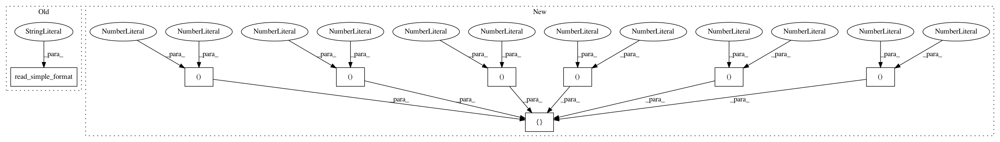

fba963a1a25c043800836af1c0ed19ed279b9750,pgmpy/tests/test_UndirectedGraph.py,TestBaseModelCreation,test_check_clique,#TestBaseModelCreation#,51
Before Change
def test_check_clique(self):
graph = mm.UndirectedGraph()
graph.read_simple_format("test_graphs/clique_graph")
ret = graph.check_clique(graph.nodes())
self.assertTrue(ret)
def tearDown(self):
After Change
def test_check_clique(self):
//clique graph
graph = mm.UndirectedGraph([(0,1), (0,2),(0,3),(1,2), (1,3),(2,3)])
ret = graph.check_clique(graph.nodes())
self.assertTrue(ret)
In pattern: SUPERPATTERN
Frequency: 3
Non-data size: 8
Instances
Project Name: pgmpy/pgmpy
Commit Name: fba963a1a25c043800836af1c0ed19ed279b9750
Time: 2014-06-23
Author: navinchandak92@gmail.com
File Name: pgmpy/tests/test_UndirectedGraph.py
Class Name: TestBaseModelCreation
Method Name: test_check_clique
Project Name: pgmpy/pgmpy
Commit Name: fba963a1a25c043800836af1c0ed19ed279b9750
Time: 2014-06-23
Author: navinchandak92@gmail.com
File Name: pgmpy/tests/test_UndirectedGraph.py
Class Name: TestBaseModelCreation
Method Name: test_jt_tree_width
Project Name: pgmpy/pgmpy
Commit Name: fba963a1a25c043800836af1c0ed19ed279b9750
Time: 2014-06-23
Author: navinchandak92@gmail.com
File Name: pgmpy/tests/test_UndirectedGraph.py
Class Name: TestBaseModelCreation
Method Name: test_jt_from_chordal_graph